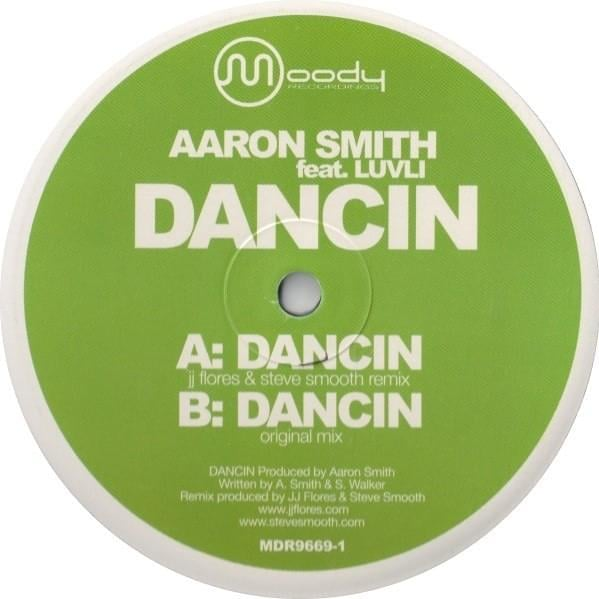

Aaron Smith выпустил новый альбом
15.10.2012Аарон Дж. Симпсон Смит (1984 г.р.) - американский диджей хаус-музыки из Чикаго, Иллинойс. Наиболее известен по записи трека под названием "Dancin'", в котором участвует вокалистка Luvli. Трек был записан в 2004 году и ремикширован в 2005 году Джей Джей Флоресом и Стивом Смутом. Затем он дебютировал под номером 21 в чарте Billboard s Hot Dance Airplay на неделе, закончившейся 2 января 2006 года. В 2013 году французский дуэт Krono сделал ремикс на песню под лейблом Moody Recordings.[1] После релиза песня набрала новую волну популярности. В 2019 году "Dancin'" получил серебряный сертификат британской фонографической индустрии (BPI), затем золотой в 2021 году и платиновый в 2022 году.[2] Музыкальное видео с ремиксом Krono на песню Dancin было снято в Смаралинде, Исландия, режиссером Элваром Гуннарссоном.
